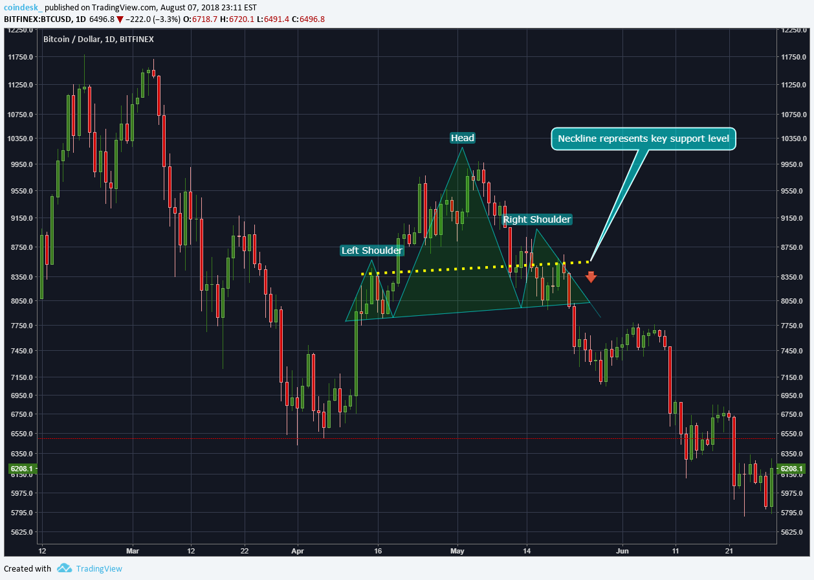

Bitcoin-at-$100,000 forecasts are looking more realistic in the options market
After long being scoffed at as just more hype from crypto evangelists, Bitcoin-at-$100,000 predictions are beginning to look like a realistic possibility in the options market. The largest cryptocurrency jumped to another all-time high of more than $70,000 on Friday, capping a seven-week run of more than 70%.In the options market, the open interest, or the number of outstanding contracts, for call options with strike prices of $80,000 and $100,000 has jumped around 12% each in the last 24 hours, according to data compiled by Amberdata.Bitcoin (BTC) was invented by a pseudonymous individual or group named Satoshi Nakamoto in 2008 and is the world’s first enduring cryptocurrency that succeeded where decades of digital cash experiments failed. Bitcoin’s monetary policy is enforced through a unique blend of software, cryptography and financial incentives rather than the whim of trusted third parties. The Bitcoin network is powered by a cryptographically secure, verifiable database called the blockchain — itself a technological phenomenon. The Bitcoin ecosystem consists of a global network of stakeholders, including the miners that secure the network and drive the issuance of the Bitcoin currency, the traders who speculate on this radically market-driven asset, and the builders working to onboard people to the cryptocurrency paradigm. At Cointelegraph, we are chronicling the ongoing story of Bitcoin and the rise of a borderless, permissionless financial system. What has changed since Satoshi wrote the Bitcoin white paper? How is Bitcoin trading developing over the years, what are the best ways of investing in Bitcoin, and how do Bitcoin futures influence blockchain adoption? How will industry stakeholders work to make Bitcoin a mainstay in people’s lives, and will incumbent and legacy systems accept or fight this change? Stay tuned.
BlackRock Bitcoin ETF now holds more BTC than MicroStrategy
Reports on X (formerly Twitter) indicate that over-the-counter (OTC) trading platforms are running out of Bitcoin and turning to public exchanges to fulfill orders. Large-volume traders, such as institutional investors, are typically served by OTC desks. While not an ETF issuer, technology firm MicroStrategy has built a portfolio of 193,000 BTC as part of its corporate treasury strategy. The software company employs a leveraged operating strategy in which debt is used to finance operations and investments. MicroStrategy is doubling down on its Bitcoin strategy. The company recently announced plans for a debt offering aimed at raising over $600 million to strengthen its Bitcoin reserves. Its Bitcoin-centric strategy led MicroStrategy (MSTR) stock to be branded as a “leveraged Bitcoin ETF." The strategy has proven to be effective so far. MSTR has soared 642% in the last 12 months, greatly outpacing Bitcoin’s 244% gains over the same period.